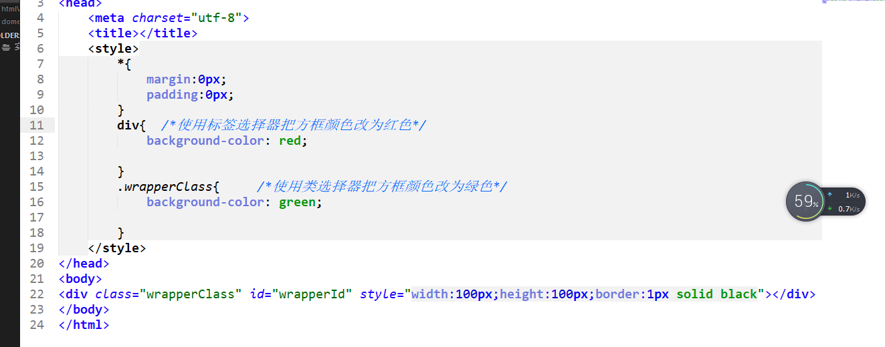
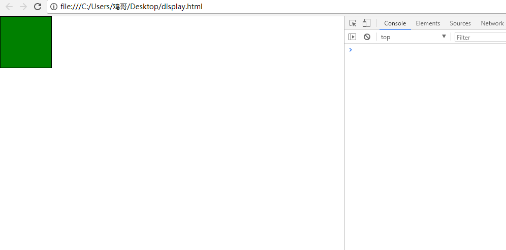
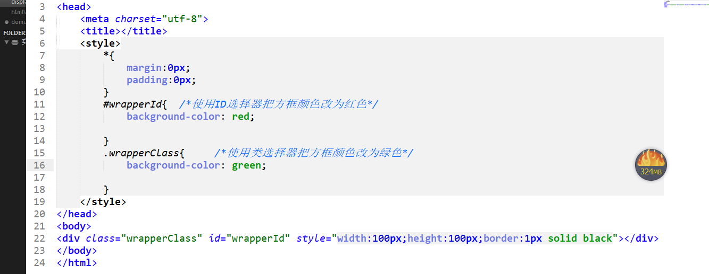
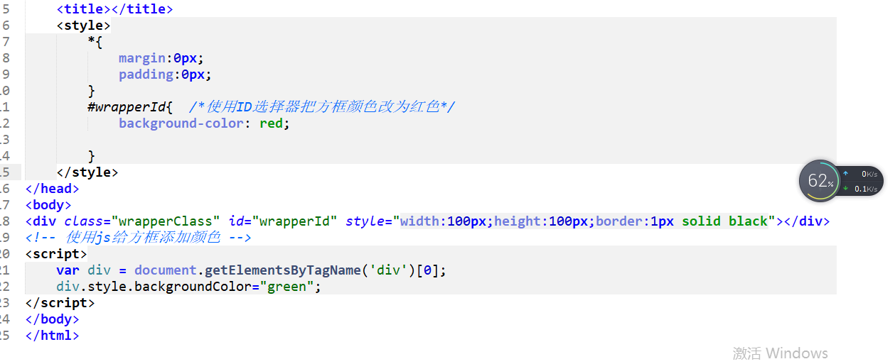
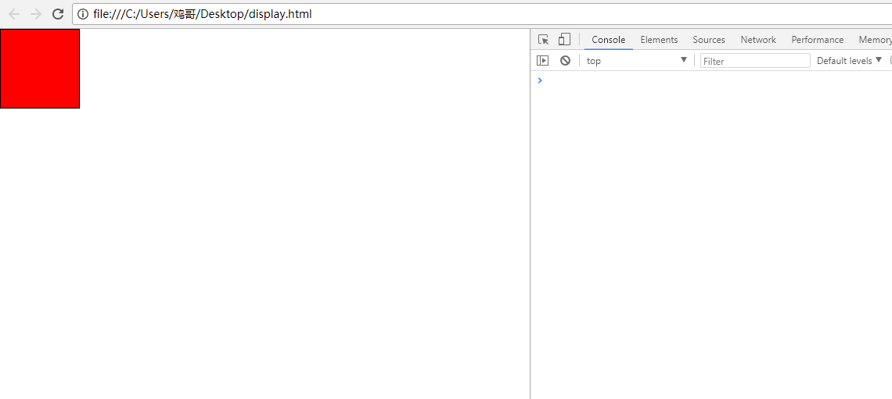
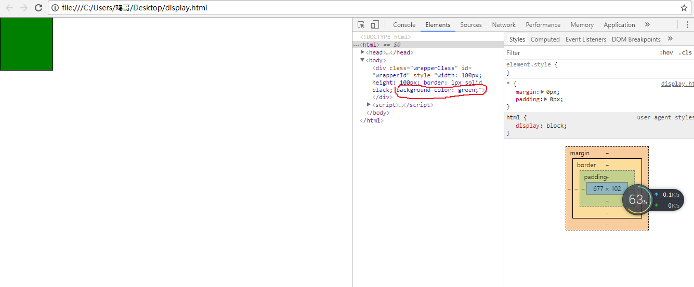

选择器的权重： div < class < id < javascript
案列：
- 先用标签选择器和类选择器进行比较 
- 在网页中的效果 
- 从上述的比较中我们发现：div < class,这和我们css代码放置的位置无关。
- 接下来我们来观察类选择器和ID选择器 
- 这次我们发现：class < id
- 下面演示的JavaScript和id选择器的比较 
- 这次我们发现：id < js
- 注意:用JavaScript添加的css样式是属于内联样式(图 红色圈哪里)


总结：通过上述的案例我们清晰的看出了每类选择器的权重排行（从这儿我们也可以看出JavaScript可以操作html-->Dom,但是它是不能操作css。只能在原有的基础上进行覆盖）。